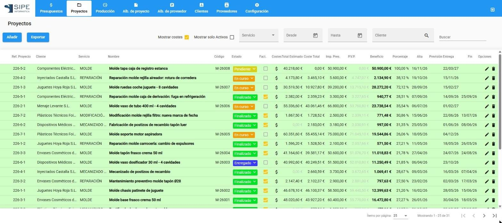

Trabajar con los listados
Presupuestos, proyectos, albaranes, producción y las tablas de configuración funcionan igual. Lo que aprendas aquí te sirve para todas.

Buscar
Escribe en el campo Buscar de la derecha. En Proyectos y Presupuestos la búsqueda se hace en todos los registros; en el resto de listados filtra lo que se está mostrando.
Filtrar
Encima de cada listado están sus filtros. Por ejemplo, en Proyectos: Servicio, Desde, Hasta, Cliente y Mostrar solo Activos. Las fechas se pueden escribir (dd/mm/aaaa) o elegir en el calendario.
- Para elegir un cliente o un proveedor, pulsa la lupa del campo y selecciónalo en la ventana que se abre.
- Para quitar un cliente del filtro, pulsa la X del campo.
- Cuando hay filtros aplicados aparece el botón de limpiar filtros (embudo tachado) junto al buscador. Púlsalo para volver a los valores iniciales.
Ordenar y paginar
Pulsa el título de una columna para ordenar por ella; vuelve a pulsar para invertir el orden. Abajo a la derecha eliges cuántos registros ver por página (25, 50 o 100) y te mueves entre páginas. La ordenación y el número de registros por página se recuerdan para la próxima vez.
Abrir, editar y eliminar
- Doble clic en una fila, o el icono del lápiz, abre el registro.
- El icono de la papelera lo elimina, después de pedir confirmación.
- El botón Añadir crea un registro nuevo.
Exportar a PDF o Excel
El botón Exportar genera un PDF o un Excel con lo que muestra el listado, respetando los filtros. Ver Exportar listados e informes.